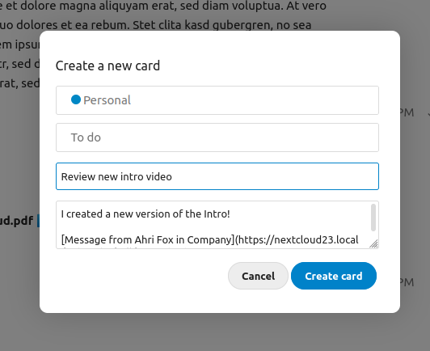
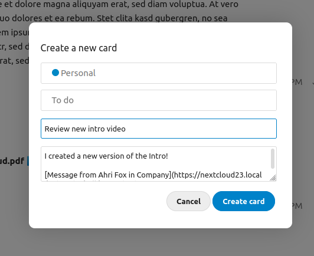
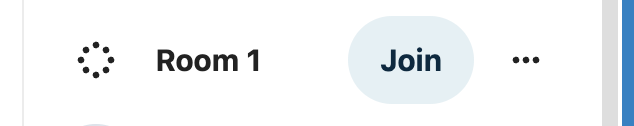

Geavanceerde functies voor Talk
Nextcloud Talk heeft een aantal geavanceerde functies die gebruikers handig zouden kunnen vinden.
Matterbridge
Matterbridge integratie in Nextcloud Talk maakt het mogelijk om ‘bruggen te slaan’ tussen Talk conversaties en gesprekken op andere chat-diensten zoals MS Teams, Discord, Matrix en anderen. Je kan een lijst van ondersteunde protocols terugvinden op de github pagina van Matterbridge.
Een moderator kan een Matterbridge verbinding toevoegen in de gespreksinstellingen.

Each of the bridges has its own need in terms of configuration. Information for most is available on the Matterbridge wiki and can be accessed behind more information menu in the ... menu. You can also access the wiki directly.
Lobby
De lobby-functie laat je toe om gasten een wachtscherm te tonen tot het gesprek van start gaat. Dit is ideaal voor dingen zoals webinars met externe deelnemers.

Je kan kiezen om deelnemers het gesprek te laten vervoegen op een specifiek moment of wanneer je de lobby manueel sluit.
Opdrachten
Nextcloud allows users to execute actions using commands. A command typically looks like:
/wiki vliegtuigen
Beheerders kunnen opdrachten configureren, inschakelen en uitschakelen. Gebruikers kunnen de opdracht “help” gebruiken om terug te vinden welke opdrachten beschikbaar zijn.
/help

Find more information in the administrative documentation for Talk.
Talk vanuit Files
In de Files app kan je zowel tekst- als spraakgesprekken voeren over bestanden in de zijbalk. Voor een spraakgesprek dien je eerst het tekstgesprek te vervoegen.


Vanaf dan kan je een tekst- of spraakgesprek voeren met andere deelnemers, zelfs wanneer je het bestand begint te bewerken.

In Talk zal een gesprek worden aangemaakt voor het bestand. Je kan van daaruit chatten of terug naar het bestand gaan door middel van het ... menu rechts bovenaan.

Maak taken aan vanuit chat of deel taken in chat.
Als Deck geïnstalleerd is kan je het ... menu van een chatbericht gebruiken om een taak naar een Deck taak om te zetten.
 

Vanuit Deck kan je taken delen met chat gesprekken.


Breakout rooms
Breakout rooms allow you to divide a Nextcloud Talk call into smaller groups for more focused discussions. The moderator of the call can create multiple breakout rooms and assign participants to each room.
Configure breakout rooms
To create breakout rooms, you need to be a moderator in a group conversation. Click on the top-bar menu and click on “Setup breakout rooms”.

A dialog will open where you can specify the number of rooms you want to create and the participants assignment method. Here you’ll be presented with 3 options:
Automatically assign participants: Talk will automatically assign participants to the rooms.
Manually assign participants: You’ll go through a participants editor where you can assign participants to rooms.
Allow participants choose: Participants will be able to join breakout rooms themselves.
Manage breakout rooms
Once the breakout rooms are created, you will be able to see them in the sidebar.

From the sidebar header
Start and stop the breakout rooms: this will move all the users in the parent conversation to their respective breakout rooms.
Broadcast a message to all the rooms: this will send a message to all the rooms at the same time.
Make changes to the assigned participants: this will open the participants editor where you can change which participans are assigned to which breakout room. From this dialog it’s also possible to delete the breakout rooms.

From the breakout room element in the sidebar, you can also join a particular breakout room or send a message to a specific room.
